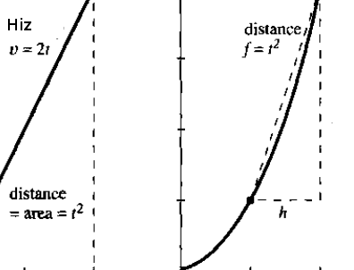
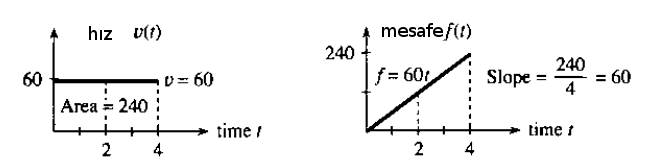
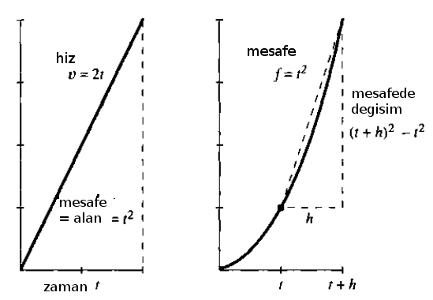
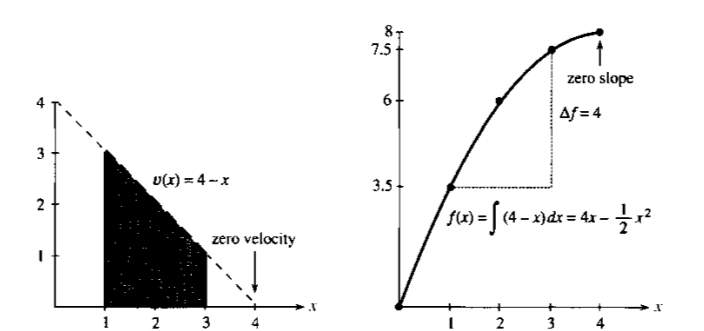
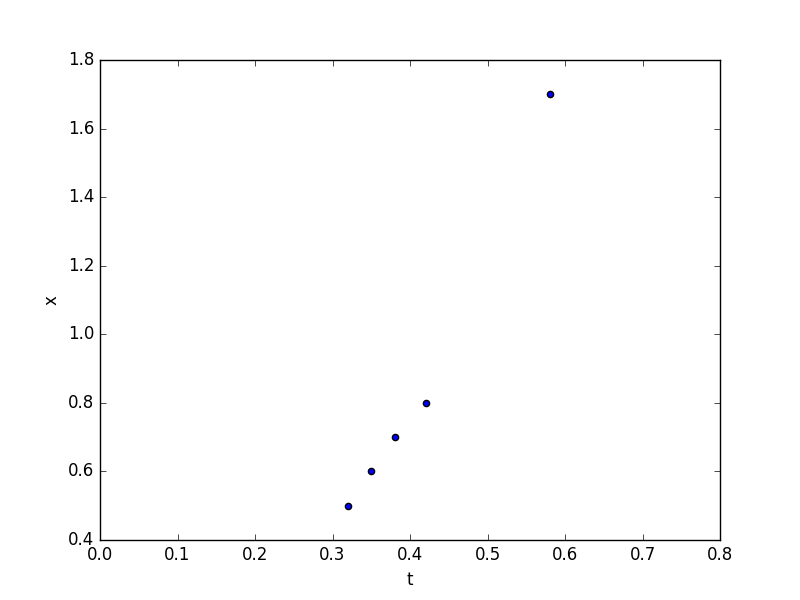

Calculus'un gerçek dünyada belki de en iyi örneği bir arabanın hız göstergesi ve kilometre sayacı arasındaki ilişkidedir. Bu iki aletin ölçümlerini birbirinden bağımsız aldığını düşünelim, mesela araba tekerleğine (ya da onu döndüren her neyse) direk bağlı bir şekilde katedilen gerçek mesafeyi ve hızı ölçebiliyorlar. Soru şu: bu ölçümlerden biri elimizde olmasa, bir ölçümü diğerine bakarak hesaplayabilir miydik? Mesela arabanın hızı (velocity) $v$'nin $t_0,t_1$ arasındaki her zaman noktasındaki kaydı elimizde olsa, bu aralıkta katedilen mesafe (distance) $f$'yi hesaplayabilir miydik? Ya da mesafe bilinseydi o zaman hızı bulabilir miydik?
Calculus bu geçişi sağlayabilir. $f$'den $v$'ye gidiş türev ile, $v$'den $f$'ye gidiş entegral ile [1, sf. 1].

İlkokulda öğretilen fizik aslında Calculus ile yapılan hesabın genelleştirilmiş hali. Orada öğrencilere öğretilen problemlerde hız çoğunlukla sabit oluyor, mesela $v = 60 m/h$ (mil / saat). 2 saat gidildikten sonra katedilen mesafe 120 mil. Bu hesabın bir çarpım olduğunu biliyoruz, bu çarpım aslında altta soldaki figürdeki alana (area) tekabül ediyor. Aynı şekilde eğer sürekli mesafeyi ölçüyor olsaydık, alt sağdaki ölçümlerdeki gibi mesela, bu grafikten geriye hıza geçmek demek bir bölüm gerektirir, ve bölüm aslında bir eğim (slope) hesabıdır.

Calculus'un değeri $v,f$ sabit olmadığı zaman ortaya çıkıyor. O zaman basit çarpım ve bölüm yeterli değil. Mesela ya mesafe $f$ artık bir fonksiyon $f=t^2$ ile temsil ediliyor olsaydı? O zaman hızı elde etmek için bir türev almak gerekir, bölüm yetmez, ki türevin sonucu da hala $t$ ve diğer başka değişkenlere bağlı bir başka fonksiyon olabilir.

Üstteki örnekte türev $2t$. Bu tek bir sayı değil, her $t$ noktasında farklı değer veren bir fonksiyon. Entegral aynı şekilde, gerçi üstteki örnekte hala üçgen alan hesabı kolay olabilir, ama çok daha çetrefil bir hız fonksiyonu olduğunu düşünelim, mesela $v(x) = 4 - x$ ($t$ yerine $x$ kullandık şimdi), ya da $v(x) = x^2 + \cos(x)$. Buradaki alan hesabı için bir entegral gerekir. Entegralleri toplam değil çarpım olarak görmek hakkında bir yazı için {\em Çok Değişkenli Calculus - Entegralleri Nasıl Düşünelim}. Eğer elimizde analitik fonksiyon değil pür sayı değerleri olsaydı, bu sefer sayısal türev ya da entegral almamız gerekirdi, ki bunun tekniklerini ileride göreceğiz.
Özetlemek gerekirse hız $v(t) = \frac{df}{dt}$, ve mesafe $f(t) = \int v(t)\mathrm{d} t$.

Üstteki örnekte $v(x) = 4 - x$ hızını görüyoruz. Entegral
$$ \int v(x) \mathrm{d} x = 4x - \frac{1}{2}x^2 + C $$
$C$ sabiti grafikte atlanmış. Bu sabit orada çünkü $C$ için hangi sayı olursa olsun türev alırken yokolur, yani $C=1,2,3..$ ile hep aynı türevi elde ederiz. Bu sebeple o sabiti problemden başka şekillerde elde etmemiz gerekir. Alan hesabının kendisi için bu fark etmez, çünkü alan hesabında çıkartma yaparken $C$'ler iptal olur,
$$ \int _{x=1}^{x=3} v(x) \mathrm{d} x = f(3) - f(1) = (7 \frac{1}{2} + C) - (3 \frac{1}{2} + C) = 4 $$
İvme
Hız mesafedeki değişim ise mesafedeki değişimin değişimi, yani hızın değişimine ivme adı verilir. İvme için türevin türevi gerekiyor, yani
$$ \frac{d^2f}{dt^2} = \frac{d}{dt} \frac{df}{dt} $$
Yerçekimi
Peki hız, ivme gibi kavramlar nereden geliyor? Burada İsaac Newton'a şapka çıkartmak lazım. Şimdi aklımıza $F = ma$ Newton kanunu geliyor, yani kütle üzerinde uygulanan kuvvet, kütle ve ivmenin çarpımına eşittir. Fakat Newton aslında direk $F=ma$ formülü keşfetmedi. Bu formül keşfettiği diğer başka bir kavramın özel halidir. Newton'un 2. Kanunu şöyle der "bir cismin momentumunun değişim oranı (bir zaman anında) o cisme uygulanan kuvvete doğru orantılıdır". Momentum nedir? Fizikte her terimin spesifik bir tanımı var. Momentum hız demek değildir. Eğer ağır bir objeyi itersem bu obje yavaş ilerler, hafif bir objeyi aynı kuvvetle itersem daha hızlı ilerler, ama momentum iki durumda da aynıdır. Momentum kütle ve hızın çarpımıdır. Ayrıca Newton momentumdaki değişimden bahsetmiştir, yani başlangıç formülü şudur:
$$ F = \frac{d}{dt} (mv)$$
Sabit $m$ için
$$ F = m \frac{dv}{dt} = ma$$
Çünkü hızın türevi ivmedir. İşte şimdi ünlü formüle eriştik.
Bu arada kütle $m$ sabittir dedik, fakat bazen böyle olmayabilir de.. Mesela bir roket uçarken yakıt kullanır, ve o yakıt kullanılıp azaldıkça roketin kütlesi de değişir. O zaman roket hakkında hesap yapan fizikçiler üstteki türevdeki $m$'i sabit alamaz.
Sonuçta Newton bilimcilere ivme ile kuvvet arasında bir ilişki sunmuş oldu. Nerede bir hızlanma varsa orada bir kuvvet vardır diyordu bize, dinamik alanına girecek kendinden sonraki bilimcilere kuvveti bulun ve onu yaratan şeyi modellemeye uğraşın diye bir tavsiye veriyordu. İlk örnekleri Newton'un kendisi verdi, mesela yerçekim kuvvetini açıkladı, onun için spesifik bir formül ortaya attı. Bu ünlü Uzaklığın Karesinin Tersi (Inverse Square Law) kanunu.
Uzayda iki kütle düşünelim, iki gezegen mesela, arasında $r$ uzaklığı olan bu iki obje arasındaki çekim kuvveti
$$ F = G \frac{m_1m_2}{r^2}$$
$G$ evrensel bir sabit, dikkat bu bizim dünyamızın yerçekim sabiti küçük $g$ değildir, ki bilindiği gibi o değer 9.807.. diye giden bir sabit.
Soru
Dünyanın yerçekim sabiti $g$ nasıl hesaplanır?
Cevap
Bir deney yapmamız lazım, mesela bir belli yüksekliklerden bir top atıp ne kadar zamanda yere düştüğünü saniye olarak kaydedebiliriz. O zaman bize mesafeyi zamana bağlayan ve onu $g$ ile ilişkilendiren bir formül lazım. Önce $g$ formülü.
Kütleler arasındaki uzaklık kütlelerin merkezine göre hesaplanır, yani tüm çekim kuvvetinin her iki objenin tam merkezinden geldiği kabul edilir. O zaman, ve eğer iki obje mesela dünya ve onun üzerinde duran bir bir cisim ise, bu cismin dünya çapına göre "uzaklığı" yaklaşık olarak yine dünya çapının kendisidir.
Eğer $m = m_1$, ki $m_1$ ufak olan obje, $m_2$ dünya, ve $r$ dünya çapı dersek, ve şöyle bir gruplama sonrası [2, sf. 9-6], $g = Gm_2 / r^2$,
$$ F = m g$$
elde ederiz. Bu gruplama yapılabildi çünkü grubun içindeki tüm değerler bilinen sabit değerler.
Mesafe / zaman formülü için, üstteki formülü ve ivme diferansiyel denklemi ile beraber düşünürsek,
$$ mg = m(\frac{d^2x}{dt^2})$$
Değil mi? Eşitliğin her iki tarafı da kuvvet, sağ tarafta alınan mesafenin ikinci türevi var, ki bu ivmedir. $m$'ler iptal olur, ve bir kez entegral alınca
$$ v(t) = v_0 + gt$$
Bir kez daha
$$ x(t) = x_0 + v_0t + \frac{1}{2}gt^2$$
$x_0,v_0$ sabitler, ama deneyimizde başlangıç hızı $v_0=0$ alacağız, ayrıca başlangıç mesafesi de $x_0=0$, geriye kalanlar,
$$ x = \frac{1}{2}gt^2$$
Güzel. Şimdi elimizdeki ölçümler hangi mesafeden top atıldığı $x$, ve düşüşün kadar zaman aldığı $t$. Mesafe metre, zaman saniye olarak.
Ölçümler gerçek bir deneyden alınmıştır.
import pandas as pd
from StringIO import StringIO
s = """t;x
0.32;0.5
0.35;0.6
0.38;0.7
0.42;0.8
0.58;1.7
"""
df = pd.read_csv(StringIO(s),sep=';')
df.plot(x='t',y='x',kind='scatter')
plt.xlim(0,0.80)
plt.savefig('ode_mattuck_85_physics_01.png')

$g$ hesabına gelelim: Üstteki formüle göre $x$ ile $1/2 t^2$ arasında lineer bir ilişki var. Bu ilişki $g$'nin ta kendisi! O zaman bahsedilen değerler arasında lineer regresyon kullanırsak $g$'yi bulabiliriz!
import statsmodels.formula.api as smf
df['t2'] = 1/2. * df.t**2
results = smf.ols('x ~ 0 + t2', data=df).fit()
print results.params['t2']
9.84948009784
Ünlü $g$'yi bulduk.
Ataletsel Yöngüdüm Sistemleri (Inertial Navigation Systems -INS-)
Cep telefonlarında hareket ya da dönüş ölçümleri veren algılayıcılar var. Peki niye bu ölçümler hep "ivmesel"? Niye hız ölçülmüyor da ivme ölçülüyor? Arabalarda hız ölçen ibre var, aynısı cep telefonlarında olamaz mı?
Fakat yöngüdüm sistemlerinin tarihini düşünürsek aslında burada istisna olan arabalardaki hız ölçümü, çünkü araba durumunda yere direk bağlı bir obje var (tekerlek), ve bu objenin alınan mesafe ile direk bir bağlantısı var, bu durumda hız hesabı daha kolay. Fakat yere direk bağlı olmayan taşıtlarda, mesela gemiler, füzeler, uçaklarda, elde hareketi tek temsil eden ve ölçülebilen şey o taşıta etki eden ivmedir. Taşıta etki yapan kuvvet ölçülebilir, ve bu kuvvet direk ivme ile oranlıdır, hız ile değil. Bir arabada bile gaza basılınca koltukta geriye doğru itiliriz, ve ivmelenmeyi hissederiz. Ama aynı hızda giderken pek bir şey hissetmiyoruz. Gözlerimizi kapatsak 50 km/saat ya da 80 km/saat arasındaki farkı anlayamayabiliriz.
Bu sebeple INS'ler ivmesel ölçüm bazlıdır. İvmesel ölçüm nasıl toplanır? Kuvvet ölçüm aletine etki ettiğinde alet içindeki bir yay gerilebilir mesela ve bu gerilme ölçülür, ya da bir sıvı hareket eder, ya da ufak rotorlar dönmeye başlar, dönme ölçülür.
INS'in uzun bir tarihi var. Aslında bizim kafamızın içinde de ataletsel algılayıcı var, dönüş yönümüzü ve kendi ivmelenmemizi bu algılayıcılar ile anlayabiliyoruz. Bu organik ölçüm aletleri evrimsel tarihimizde balığa benzeyen bir organizmadan bu yana gelişen bir şey. Bu sistem sayesinde dengemizi sağlıyoruz, görsel olarak anlayamadığımız zaman duruşumuzu hissediyoruz [3, sf. 13].
Fakat INS'in esas gelişme zamanı 1930-1945 arasında Almanya'da ve Amerika'da oldu; 1. Dünya Savaşı sonrası Versailles Anlaşması sebebiyle o savaşı kaybetmiş Almanya'nın bazı silahları geliştirmesi men edilmişti, bu sebeple Almanya anlaşmaya dahil edilmemiş araçların, mesela füzeler gibi, geliştirilmesine öncelik verdi. V-1 ve V-2 roketleri bu sırada gelişti ve bu roketlerin INS'e ihtiyacı vardı. Aynı zaman diliminde C. Draper adlı bir mühendis ABD ordusu için INS uygulamarı geliştirdi. Draper 1946'da bir AR-GE projesi çerçevesinde gemiler, denizaltılar, uçaklarda kullanılabilecek modern INS üzerinde denemeler yaptılar. Draper INS'in babası sayılıyor.
MİT Üniversitesi de NASA için INS araştırmaları yaptı, Apollo Komuta Modülü'ndeki sistem onlar tarafından geliştirildi.
İvmeden hız, oradan mesafe için daha önce gördüğümüz gibi iki entegrasyon gerekiyor,
$$ v(t) = v(t_0) + \int _{t_0}^{t_1} a(s) \mathrm{d} s $$
$$ x(t) = x(t_0) + \int _{t_0}^{t_1} v(s) \mathrm{d} s $$
Bu hesapların sayısal olarak yapılmasının detayları Sayısal Fonksiyonları Sayısal Entegre Etmek yazısında bulunabilir.
İvme, hızın vektörel kullanımı hakkında detaylar için Çok Boyutlu Calculus - Ders 6.
İzafi Enerji Formülü
İzafi mekanikte kuvvet ve momentumdan başlayan formül biraz daha değişiyor [4].
$$ F = \frac{\mathrm{d} (mv)}{\mathrm{d} t} $$
tanımında $m$'in değişmediğini farz etmiştik. Fakat izafi mekanikte enerji uygulandıkça kütlenin büyüdüğünü göz önüne almak lazım. Bu büyüme faktörü $\gamma = \left(1 - \frac{v^2}{c^2} \right)^{-1/2}$, yani bu faktöre oranla kütle büyüyecek. Entegral şu hale geliyor,
$$ E_k = \int _{0}^{t} \frac{\mathrm{d} (\gamma mv)}{\mathrm{d} t} \mathrm{d} x $$
Bu entegral biraz daha karmaşık ama sonunda
$$ E_k = (\gamma - 1)mc^2 $$
elde ederiz. Yani kütleyi daha fazla hızlandırmak için gittikçe daha fazla iş yapmak gerekir çünkü enerji eklendikçe kütle daha ağırlaşır.
Kaynaklar
[1] Strang, Calculus, 4th Edition
[2] Feynman, The Feynman Lectures on Physics, Volume I
[3] Grewal, Global navigation Satellite Systems, Inertial Navigation, and Integration, 3rd Edition